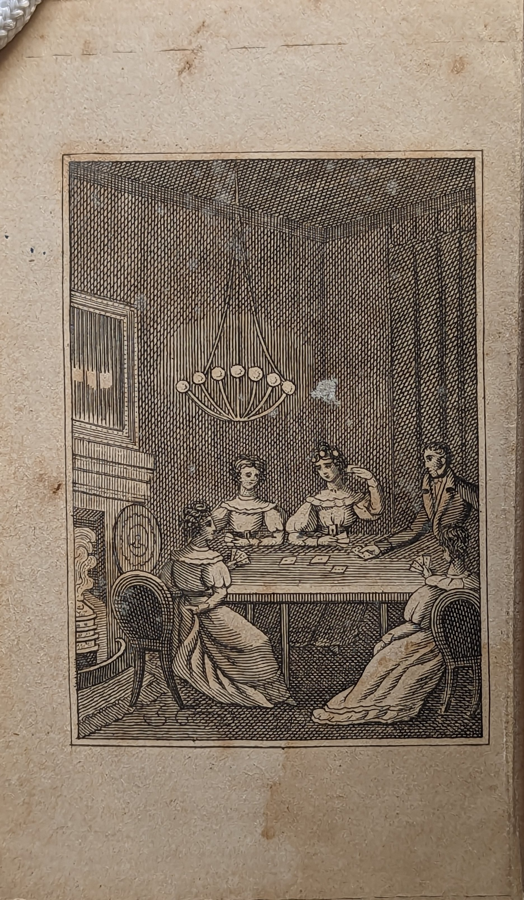
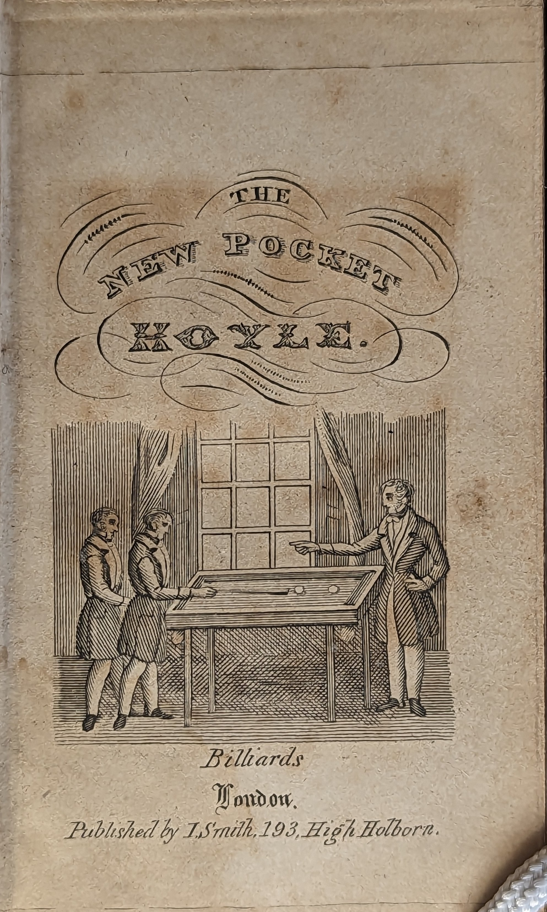

A Descriptive Bibliography of Edmond Hoyle
Copyright © 2014-26 by David Levy
(page updated 2023-11-30)User Guide
Smith.1.2
The New Pocket Hoyle, published by I. Smith, another London impression, nd.
| Collation: | 16o: [B]8 C–L8 [$1 signed]; 80 leaves, pp. [i] ii, [3] 4 [5] 6–160 [misprinting 98 as 96, 110 as 10, 111 as 11] |
| Frontispiece: |  |
Four women seated at a whist table with a man dealing the cards |
| Engraved Title: |  |
‘THE | NEW POCKET | HOYLE. | [Three men at a billiards table] | Billiards | London. | Published by I. Smith, 193, High Holborn.’ |
| Contents: | Signature (Page) Reference | Contents | Signature (Page) Reference | Running Titles |
| B1r–L8v (i–160) | see Smith.1.1 | B1r–L8v (i–160) | see Smith.1.1 |
| Plates: | Frontispiece engraving: |
| Publisher: | Joseph Smith |
| Printer: | Joseph Smith (colophon) |
| References: | Horr 702, Jessel 841, Rather 143 |
| Colophon: | ‘JOSEPH SMITH, PRINTER, 193, HIGH HOLBORN’ |
| Copies Seen: | Copisarow [2 copies]; Levy [1536] |
| Notes: | The same setting of type as Smith.1.1 with the A gathering including the letterpress title page replaced by a frontispiece and engraved title page.The Levy copy has J. SMITH rather than JOSEPH SMITH in the colophon. |